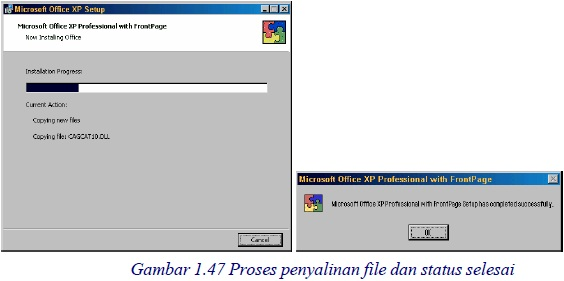

7 Menginstal FrontPage XP
Tahap terakhir persiapan, adalah yang pa ling penting, yiatu menginstal FrontPage
XP. Anda bisa menggunakan CD master installer Microsoft Office XP with
FrontPage, atau CD master installer Microsoft FrontPage XP tersendiri.
Adapunlangkahyang diperlukan adalah:
1. Masukkan CD installer Microsoft Office XP atau FrontPage XP.
2. Jika sarana Autorun tidak bekerja, aktifkan Windows Explorer atau My
Computer untuk membuka isi CD tersebut.
Gambar 1.39 File Setup.exe
3. Klik ganda file Setup.exe, lihat Gambar 1.39. Muncul tampilan pertama instalasi
seperti Gambar 1.40.
Gambar 1.40 Tampilan pertama instalasi Microsoft Offiice XP
4. Isikan nomor CD key yang diperlukan lalu klik tombol Next, muncul tampilan
instalasi System Update Files. Klik tombol Next, proses update dijalankan.
Gambar 1.41 Proses update
5. Setelah beberapa saat kemudian komputer akan di-restart dan muncul tampilan
seperti Gambar 1.42, untuk pilihan komposisi instalasi.
Gambar 1.42 Pilihan komposisi instalasi.
6. Klik pilihan Custom, lalu Next. Muncul daftar komponen Office XP. Gambar
1.43. Di antaranya terdapat Microsoft FrontPage.
Gambar 1.43 Daftar komponen Office XP
7. Klik icon-icon selain Microsoft FrontPage, seperti Gambar 1.43 di atas. Klik
juga pilihan kedua (Choose detailed installation ...). Lalu klik tombol Next,
muncul pilihan unsur komponen Office XP.
Gambar 1.44 Daftar unsur komponen Office XP
8. Klik icon Microsoft FrontPage for Windows, muncul menu. Klik perintah
Run all from my computer pada menu. Lihat Gambar 1.45 di bawah ini.
Gambar 1.45 Perintah Run all from my computer pada menu
9. Lalu klik Next, muncul laporan pilihan Anda. Lihat Gambar 1.46. Perhatikan
bahwa yang akan diinstal hanya Microsoft FrontPage.
Gambar 1.46 Hanya FrontPageyang akan diinstal
10. Klik tombol Install, proses penyalinan file akan dimulai.

11. Setalah selesai, muncul status selesai.
12. Klik OK.
Copyright © Herlan Lesmana
Created with the Freeware Edition of HelpNDoc: Easily create CHM Help documents